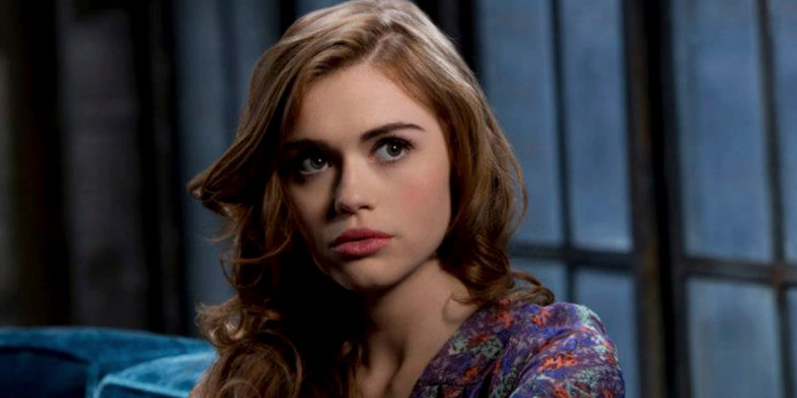
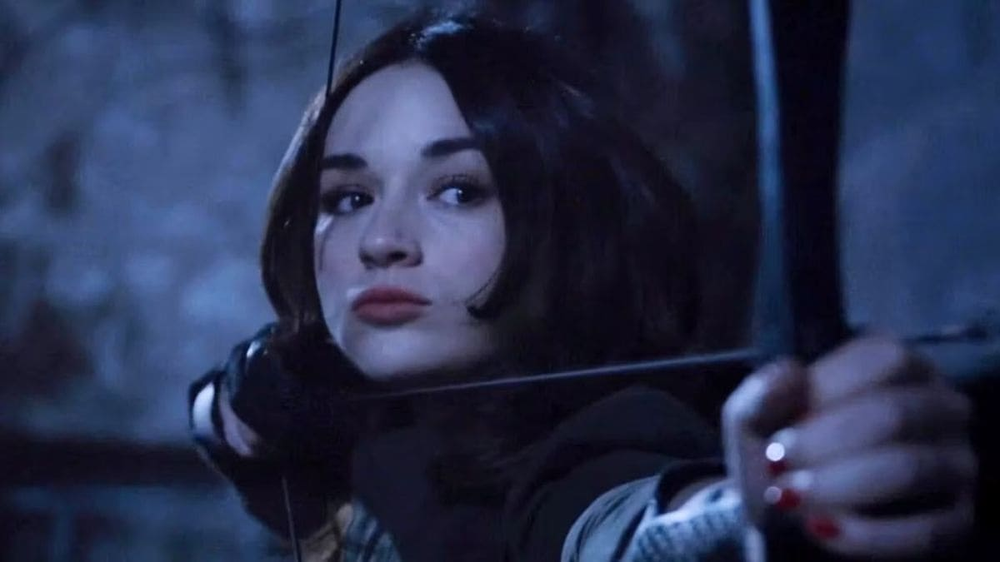

Scott McCall, le personnage principal de la série. Un adolescent ordinaire dont la vie bascule du
jour au lendemain lorsqu'il est mordu par un Alpha en pleine forêt de Beacon Hills. Devenu
loup-garou, il finira par accéder au rare statut de True Alpha.
Stiles Stilinski, le meilleur ami de Scott depuis l'enfance et fils du shérif. Simple humain au
milieu d'une meute surnaturelle, c'est le cerveau du groupe : sarcastique, hyperactif et
redoutablement intelligent.

Lydia Martin, d'abord présentée comme la fille populaire du lycée, cache en réalité un génie hors
norme. Au fil des saisons, elle découvre qu'elle est une Banshee, capable de pressentir et
d'annoncer la mort.

Allison Argent, premier amour de Scott. Issue d'une lignée ancestrale de chasseurs de loups-garous,
les Argent, elle se révèle être une archère redoutable, tiraillée entre l'héritage familial et ses
sentiments.